Home Tape Dispenser
Re-design the rugged into the welcoming: a industrial product that brings warmth and charm to any home.

A client I worked with wanted to reimagine how a tape dispenser looked and operated. Standard tape dispensers, while functional, often appear industrial and are exactly that—functional without much thought to aesthetics. The client wanted a tape dispenser that had a more appealing appearance, one that could suit the home environment, but with a touch of fun and charm.
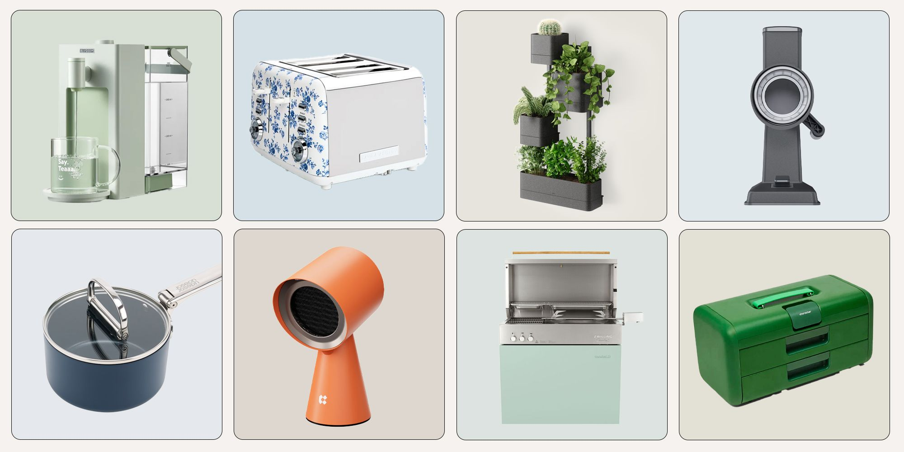Ideation
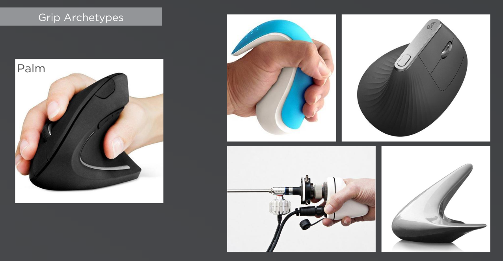Our team quickly set about identifying various product archetypes and key ergonomic concerns, which provided clear insights and directions for our ideation. Ideas were conceptualized and refined until a clear direction was established that could be taken forward into prototyping and testing.
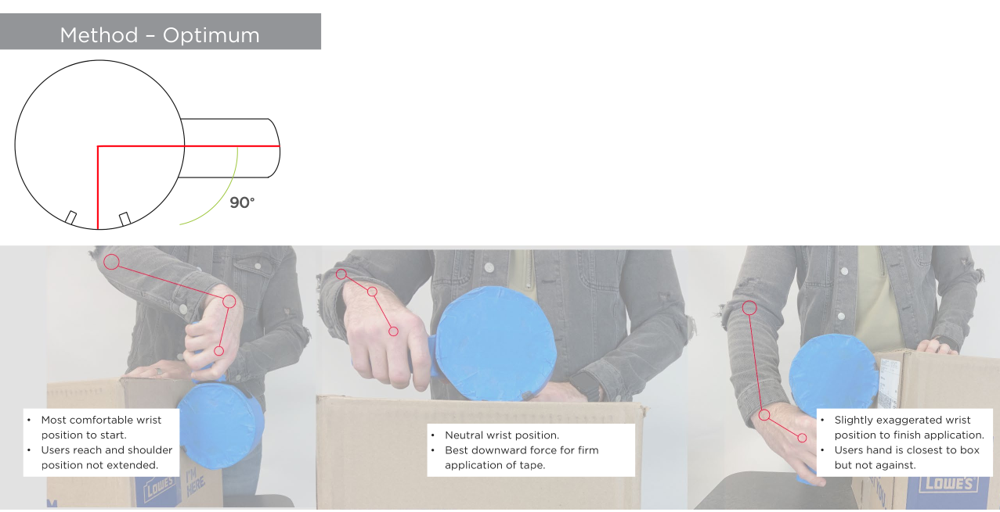 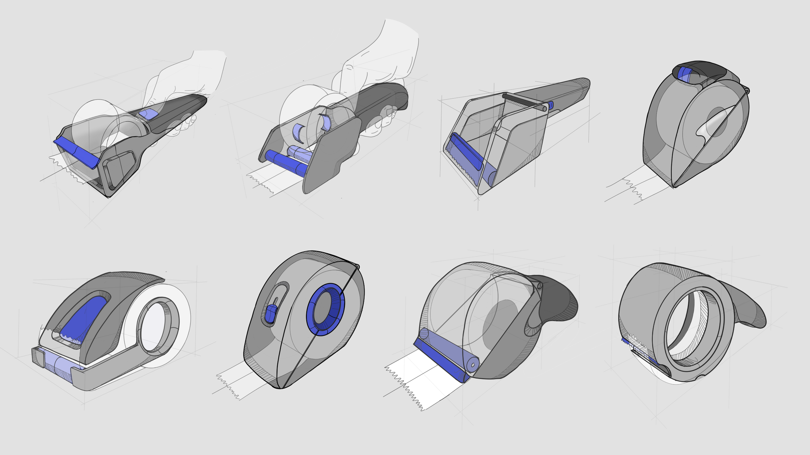 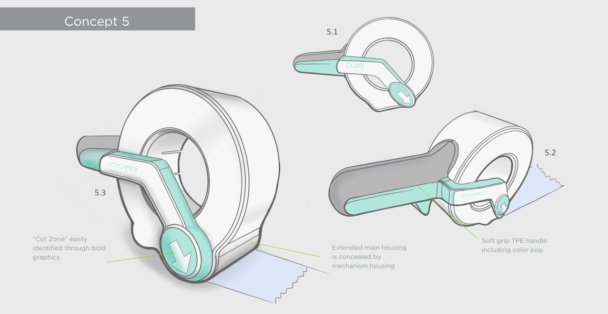 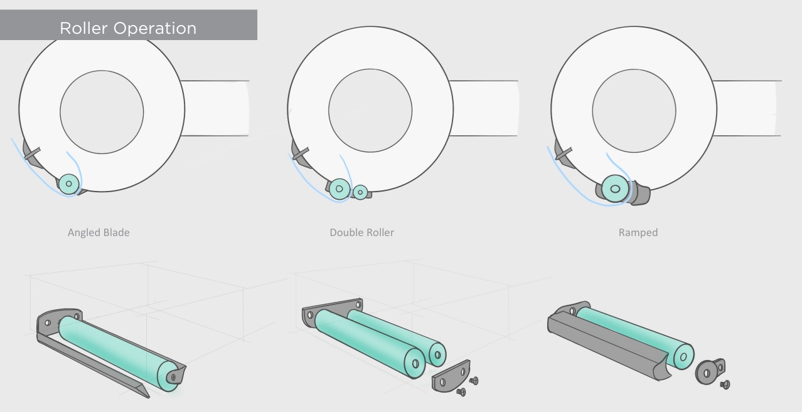 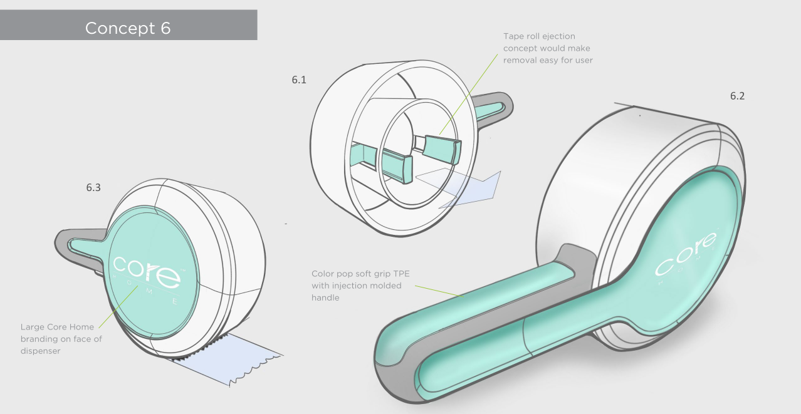MODEL MAKING

Protoype models were made to evaluate overall, aesthetics, form, scale and ergonomic considerations.
 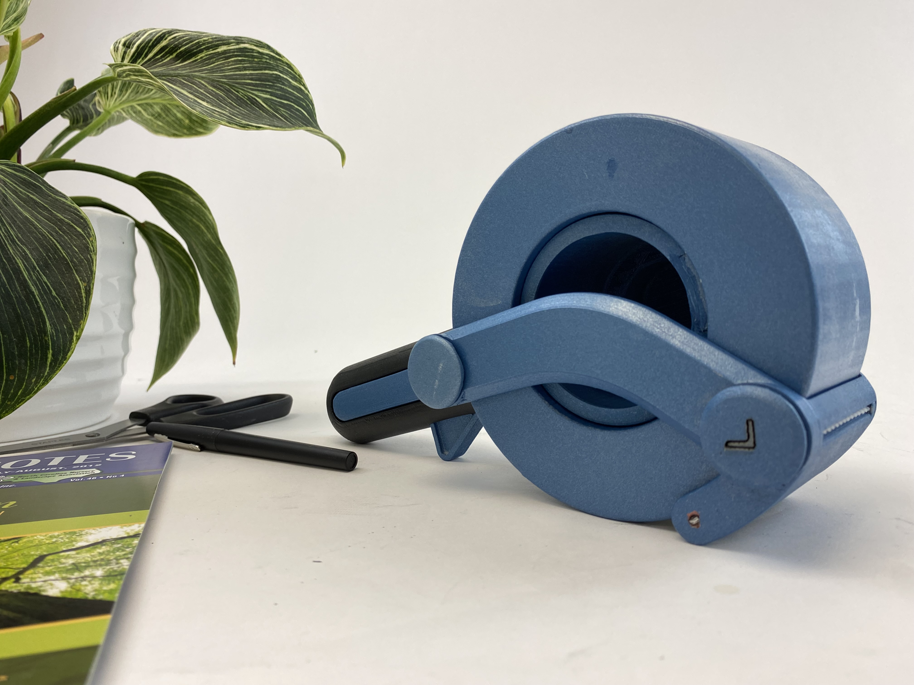
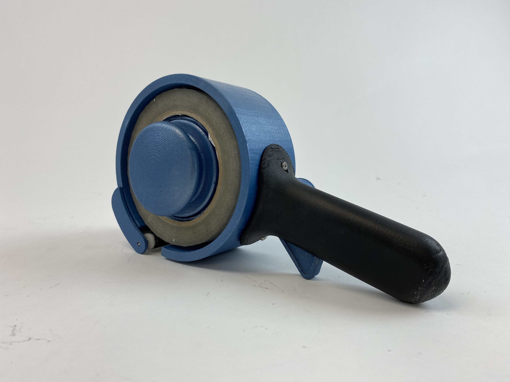
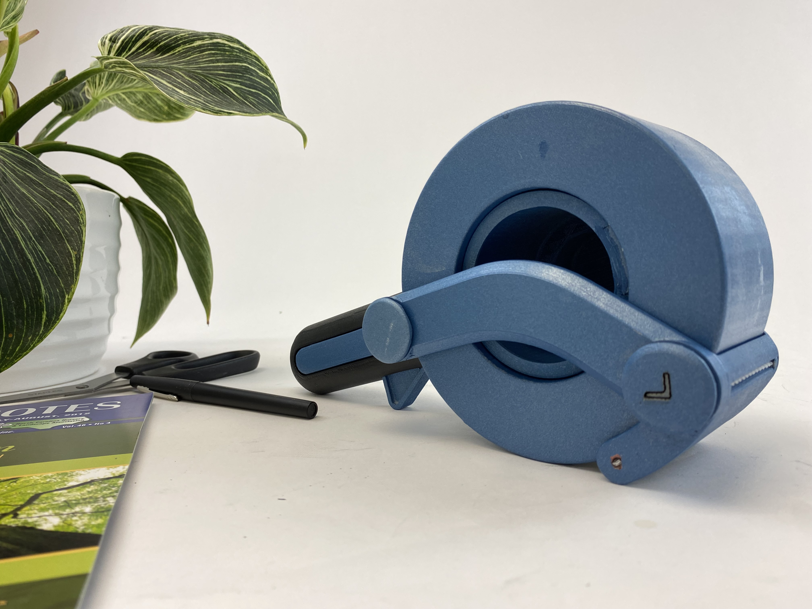
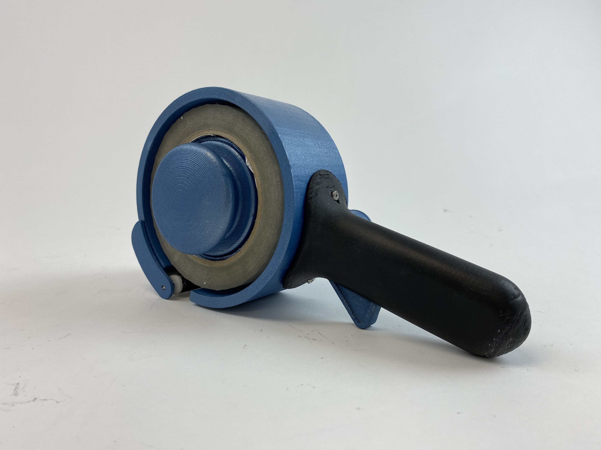
PRODUCT RENDERINGS
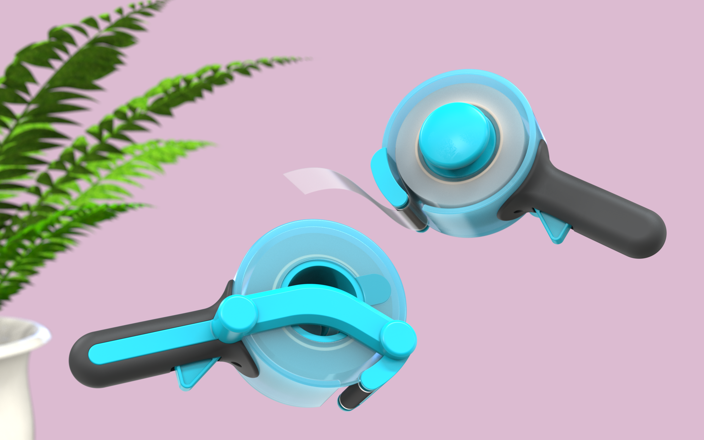Along with the models, we provided stylised renderings that client could use to communincate the design to their relevant parties and was able to confidently take the developmental work we provided forward into manufacturing and production.
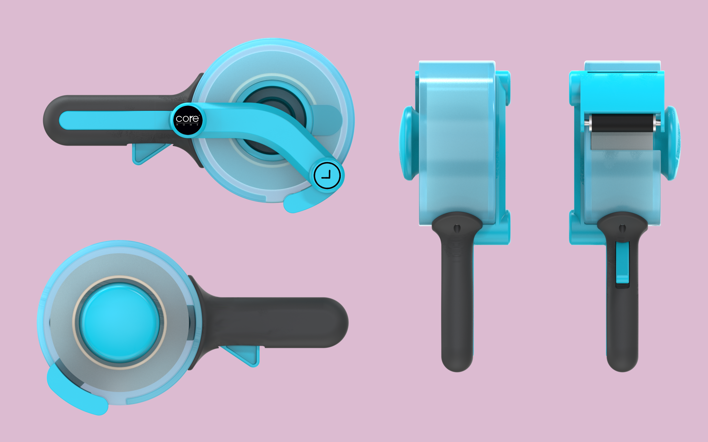 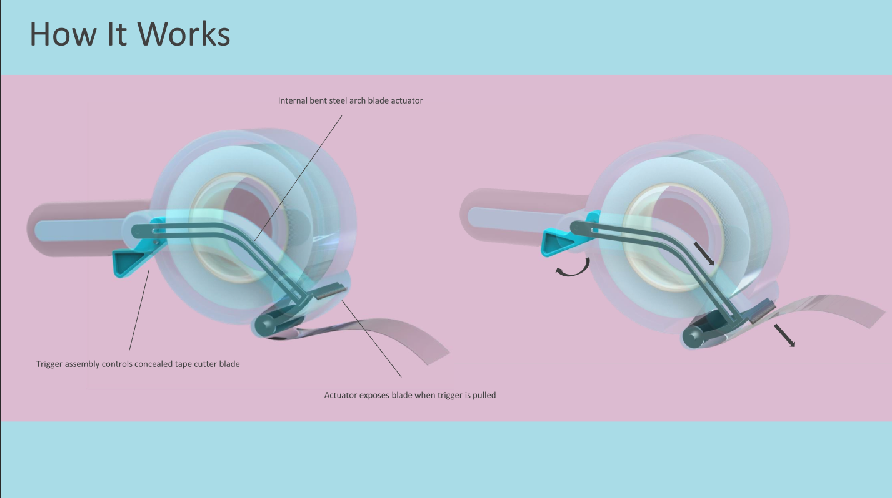 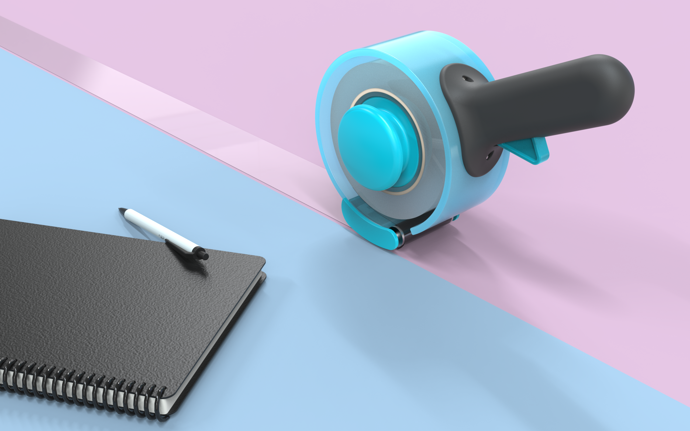 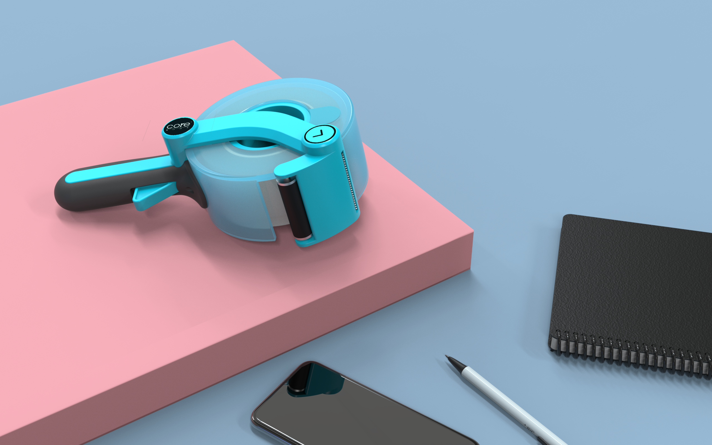